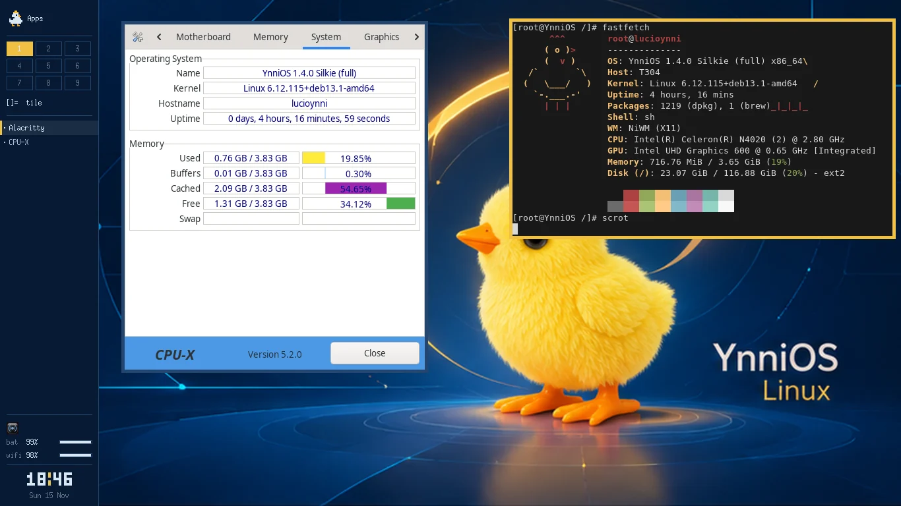
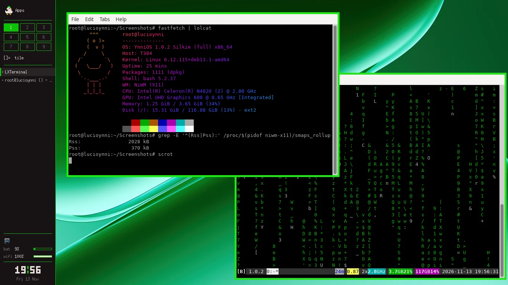

NiWM
A tiling window manager and a taskbar for X11 that together use under 1 MB of memory.

$ pid=$(pidof niwm-x11) $ grep -E 'Rss|Pss' /proc/$pid/smaps_rollup Rss: 2028 kB Pss: 370 kB
Measured on a 2-core Celeron laptop. PSS is the real cost; nibar adds about 0.45 MB.
What it does
- Tags instead of workspaces
- Nine tags per monitor. A window can sit on several tags, you can view several at once, and each tag keeps its own layout.
- Tiling and floating
- Tile, monocle, grid and float layouts. Any window can float by itself; hold Super and drag to move or resize it.
- nibar, a vertical taskbar
- Apps menu, tags, window list, system tray, battery, network and a clock. The menu reads your installed programs each time it opens.
- Scratchpad
- One key drops a terminal down from the top of the screen and hides it again, still running, on whatever tag you're on.
- Window swallowing
- Start a video or an image viewer from a terminal and it takes the terminal's place until it closes.
- Several monitors
- Each monitor has its own tags and its own bar. Plugging and unplugging is followed live.
- One command language
- The config file is a list of commands, keys run commands, and
niwmctlsends the same commands to the running session. - Small on purpose
- Plain C on libxcb. No scripting language, no widget toolkit, and text is drawn with fonts the X server already has.
Install
Debian, Ubuntu and relatives
From the nni package repository, for 64-bit PCs on Debian 12 or Ubuntu 22.04 and newer.
sudo wget -O /usr/share/keyrings/nni-archive-keyring.gpg \
https://initramfs20-ai.github.io/nni/apt/nni-archive-keyring.gpg
sudo wget -O /etc/apt/sources.list.d/nni.sources \
https://initramfs20-ai.github.io/nni/apt/nni.sources
sudo apt update && sudo apt install niwmFrom source, on any distribution
It needs a C compiler, make, pkg-config and the libxcb headers.
# Debian/Ubuntu: build-essential pkg-config libxcb1-dev
# libxcb-randr0-dev libxcb-res0-dev
# Arch: base-devel libxcb
# Fedora: gcc make pkgconf libxcb-devel
git clone --depth 1 https://github.com/initramfs20-ai/nni
cd nni/niwm && make
sudo make install PREFIX=/usrGentoo
From the nni overlay.
cat > /etc/portage/repos.conf/nni.conf <<'EOF'
[nni]
location = /var/db/repos/nni
sync-type = git
sync-uri = https://github.com/initramfs20-ai/nni.git
sync-depth = 1
EOF
echo 'x11-wm/niwm ~amd64' \
>> /etc/portage/package.accept_keywords/niwm
emerge --sync nni && emerge x11-wm/niwmStart it
From a console login, or pick NiWM in your display manager's session list.
echo 'exec niwm-x11' >> ~/.xinitrc
startxNiWM draws no wallpaper itself; xwallpaper or feh does that. YnniOS ships with NiWM as its desktop: pol install niwm.
Keys to start with
| Super + Enter | Open a terminal |
|---|---|
| Super + P | Open the apps menu, then type to filter |
| Super + S | Show or hide the scratchpad terminal |
| Super + J / K | Focus the next or previous window; add Shift to swap them |
| Super + 1…9 | View a tag; add Shift to send the window there |
| Super + Space | Next layout: tile, monocle, grid, float |
| Super + F | Fullscreen |
| Super + drag | Move a window; with the right button, resize it |
| Super + . / , | Next or previous monitor; add Shift to take the window along |
| Super + Shift + C | Close the window |
| Super + Ctrl + R | Reload the configuration |
| Super + Shift + Q | Quit NiWM |
man niwm and man nibar have the rest.
Configure
The theme buttons at the top of this page do what a theme does on a real desktop: nibar takes its colours from NiWM's window borders, so the two always match.
Every line of ~/.config/niwm/niwmrc is a command. Start from a copy of /etc/niwm/niwmrc.
set gap 10
set terminal alacritty
bind mod+b spawn firefox
rule class=mpv float
rule class=Gimp noswallow
autostart nibarTry any of them live before saving it, and script NiWM with the same tool.
niwmctl set focus_color #3355ff
niwmctl layout grid
niwmctl rule class=Steam monitor 2
niwmctl subscribe # state on every change, for scriptsnibar has its own file, ~/.config/niwm/nibarc. It only needs the lines you change.
position right
layer beside # fullscreen windows leave the bar visible
clock 12h
tray_hide Blueman-appletColours can also come from your X resources, which is how a theme recolours NiWM and nibar together.
niwm.focus_color: #22e01a
niwm.normal_color: #1c3a1e
nibar.background: #161214
A home-made theme: green borders, and nibar's accent following them. The four themes at the top of this page come with YnniOS, where nni theme switches them.